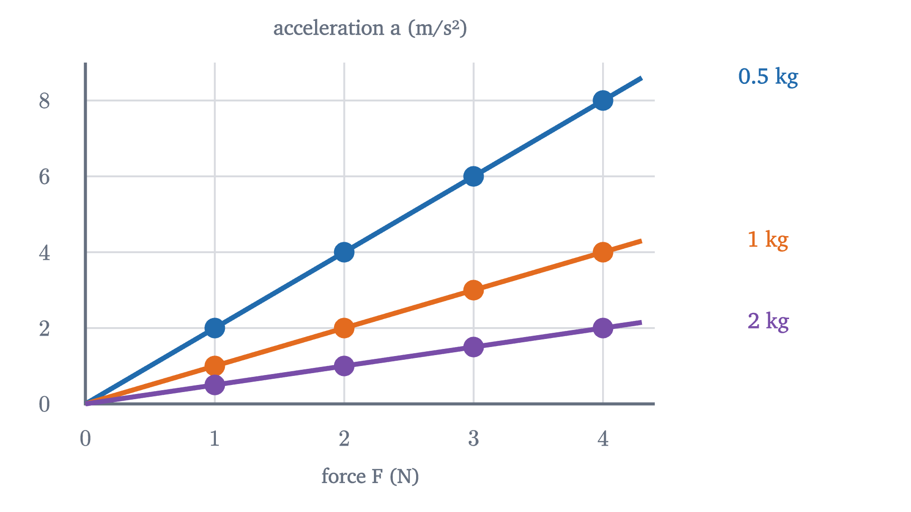

Newton's second law, F = ma: what force really does
Forces change an object's velocity; none is needed to keep it moving. Newton's three laws, free-body diagrams, the incline and the Atwood machine in full.
AssumesPosition, velocity and acceleration: reading motion graphsWhat is a vector? Arrows, lists of numbers, and adding them
Give a puck a shove across a carpet and it stops within half a meter. Aristotle looked at motions like that one and drew the obvious conclusion: things move only while something pushes them, and stop when the pushing stops. For two thousand years this was physics.
Now give the same shove on a wood floor, and then on ice. The puck goes one meter, then nearly seven. Nothing about the puck or the shove changed; only the surface did. Galileo asked what the sequence is heading toward: on a surface with no friction at all, the puck would have no reason ever to stop. If that is right, Aristotle had it backward: the carpet is what stops the puck, and nothing at all is needed to keep it going.
Without a net force, velocity does not change
In the animation each puck loses velocity at a steady rate, and that rate is set by the surface: 4.9 m/s every second on the carpet, 1.96 on the wood, 0.29 on the ice. (These follow from friction coefficients of 0.5, 0.2 and 0.03; we will see how below.) As the friction force shrinks toward zero, so does the rate at which velocity is lost. The limiting case is Newton’s first law.
It needs one piece of vocabulary. A force is a push or a pull on one object by another: it has a size, measured in newtons (N), and a direction, so it is a vector. When several forces act on one object, their vector sum is the net force.
The clause about frames is needed. Watch a ball on the floor of a bus as the bus brakes: the ball rolls forward with no force pushing it. The law has not failed. A braking bus is not an inertial frame, and the law makes no claim there. For most purposes the ground is inertial to good accuracy, and every problem below is described from the ground.
Notice what the law says about the puck on carpet. Its velocity changes, so the net force on it cannot be zero, and the friction force is the only horizontal force around. Force is linked to the change of velocity. The next step is to find out exactly how.
The same push on different masses
Here is an experiment that can be done on an air-hockey table, where friction is negligible. Pull a puck with a spring held at a fixed stretch, so that the pull is constant, and record the motion. Then change the puck, or pull with two identical springs side by side for double the force.
The dots spread out, so each puck is speeding up, and a measurement of the spacing shows that each one has a constant acceleration (the slope of its velocity graph; see the previous lesson). Here are the values such an experiment gives.
| Force (N) | Mass of puck (kg) | Acceleration (m/s²) |
|---|---|---|
| 2 | 0.5 | 4 |
| 2 | 1 | 2 |
| 2 | 2 | 1 |
| 1 | 1 | 1 |
| 4 | 1 | 4 |
Pause and try
Find the pattern in the table. Then predict the acceleration of a 4 kg puck pulled with 2 N, and of a 1.5 kg puck pulled with 6 N.
Show answerHide answer
For a fixed puck, doubling the force doubles the acceleration (rows 4, 2 and 5). For a fixed force, doubling the mass halves the acceleration (rows 1 to 3). Both are covered by $a = F/m$: every row has acceleration equal to force divided by mass. The predictions are $2/4 = 0.5$ m/s² and $6/1.5 = 4$ m/s².

Newton’s second law
Each clause connects to something we have seen. “Net” is there because the puck on carpet responds to the total of the forces on it. The acceleration points along the net force, which is why friction, pointing backward, slows the puck. And $m$ measures how hard the object is to accelerate: the 2 kg puck needs twice the force of the 1 kg puck for the same acceleration. This resistance to acceleration is called inertia, and mass is its measure.
You might object that the law is circular: we measure force by the acceleration it causes and then announce that force causes acceleration. Part of the law is indeed a definition, since it fixes the size of the newton. But the table contains facts that no definition could force on nature: two identical springs give exactly twice the acceleration of one, and two identical pucks stuck together accelerate exactly half as much as one. Forces add, masses add, and one equation relates them. That is the experimental content, and it has been confirmed to high precision for everyday objects.
The law also answers the opening question precisely. What a force produces is acceleration, the rate of change of velocity. With zero net force the acceleration is zero and the velocity stays whatever it was, which is the first law again.
Several forces add as vectors
The second law is a vector equation. Suppose a 2 kg puck on the frictionless table is pushed with 3 N toward the east and, at the same time, 4 N toward the north. It does not accelerate at $7/2$ m/s².
Forces combine the way displacements do, tip to tail (the lesson on vectors explains this addition in detail). Here the two pushes are perpendicular, so the Pythagorean theorem gives the size of the sum, $\sqrt{3^2 + 4^2} = 5$ N, and the acceleration is $5/2 = 2.5$ m/s² along that diagonal.
In practice we rarely draw the triangle. We choose perpendicular $x$ and $y$ axes, describe each force by its components along them, and use the second law once per axis:
For the puck, $a_x = 3/2 = 1.5$ m/s² and $a_y = 4/2 = 2$ m/s², and $\sqrt{1.5^2 + 2^2} = 2.5$ m/s² as before.
Weight is a force; mass is not
Near the Earth’s surface, every object dropped in a vacuum falls with the same acceleration, $g \approx 9.8$ m/s² downward. Read through the second law, that fact tells us the force of gravity on an object of mass $m$: it must have magnitude $mg$.
A 2 kg block has a weight of $2 \times 9.8 = 19.6$ N. Its mass is a property of the block and is 2 kg anywhere. Its weight depends on where it is: on the Moon, where $g$ is 1.62 m/s², the same block weighs 3.2 N and is exactly as hard to shove sideways as on Earth.
Forces come in pairs
A book lying on a table has weight, yet it does not accelerate, so some other force must balance its weight. The table pushes up on it. A force that a surface exerts at right angles to itself is called a normal force (“normal” meaning perpendicular).
Where there is a force there are always two objects, and the third law says the interaction is symmetric.
The book pushes down on the table as hard as the table pushes up on the book. The Earth pulls the book down with 19.6 N, say, and the book pulls the Earth up with 19.6 N. The Earth’s acceleration in response is that force divided by $6 \times 10^{24}$ kg, which is why nobody notices it.
Free-body diagrams: the method
Almost every mechanics problem is solved by the same procedure, and it is worth following it rigidly until it is automatic.
- Choose one object.
- Draw it alone, and draw an arrow for every force exerted on it by something else: its weight, plus one force for each thing touching it (surfaces, strings, hands). This drawing is a free-body diagram.
- Choose axes, with one of them along the direction of the acceleration if you know it.
- Split each force into components along the axes.
- Write $\sum F = ma$ for each axis and solve.
- Check units, and check a special case where you know the answer.
The standard first test of the method is a block sliding down a ramp. Take a 2 kg block on a frictionless ramp tilted at $30°$.
Pause and try
Before working it out, predict: is the block’s acceleration down the ramp equal to $g$, half of $g$, or something else? And will a heavier block slide down faster?
Show answerHide answer
The figure and derivation below give exactly half of $g$ for a $30°$ ramp, 4.9 m/s², because only half of the weight points along the ramp. The mass cancels, so a heavier block has the same acceleration.
The one piece of geometry in that figure is the angle between the weight and the $y$ axis. Tilting a ramp by $\theta$ from the horizontal tilts its perpendicular by the same $\theta$ from the vertical, so the weight makes angle $\theta$ with the perpendicular. Its component along the perpendicular is therefore $mg\cos\theta$, and its component along the ramp is $mg\sin\theta$.
A real ramp also has friction. For a block that is sliding, the friction force is found by experiment to be roughly proportional to the normal force, $f = \mu_k N$, directed against the sliding, where the number $\mu_k$ (the coefficient of kinetic friction) depends on the two surfaces. This is an empirical rule that holds well for dry solids, and it is a model, with nothing like the standing of Newton’s laws.
The checks from step 6: $\sin\theta$ and $\cos\theta$ and $\mu_k$ are pure numbers, so $a$ has the units of $g$. With no friction, a flat ramp ($\theta \to 0°$) gives $a \to 0$ and a vertical one ($\theta \to 90°$) gives $a \to g$, free fall. And the mass has cancelled, for the same reason all objects fall together: a heavier block is pulled harder and is harder to accelerate, in the same proportion.
For our block at $30°$ with no friction, $a = 9.8 \times 0.5 = 4.9$ m/s². With $\mu_k = 0.2$, the friction force is $0.2 \times 17.0 = 3.4$ N and $a = 9.8\,(0.5 - 0.2 \times 0.866) = 3.2$ m/s². If friction is strong enough that $\mu_k > \tan\theta$, the formula gives a negative $a$: a block already sliding down slows, and once it stops it is no longer sliding, so the theorem no longer describes it.
We can now account for the opening figure. A puck on a level surface has $N = mg$, so friction is $\mu_k mg$ and the puck’s acceleration is $-\mu_k g$: $-4.9$ m/s² for $\mu_k = 0.5$, $-0.29$ m/s² for $\mu_k = 0.03$.
Worked examples
A harder problem has two objects tied together. In an Atwood machine two masses hang from a string that passes over a pulley. Take $m_1 = 3$ kg and $m_2 = 2$ kg, released from rest.
Pause and try
The heavier mass will fall and the lighter one rise. Before reading on, decide: is the tension in the string equal to the heavier weight (29.4 N), equal to the lighter weight (19.6 N), or somewhere between? Use the second law on each mass to justify your choice.
Show answerHide answer
Between. The 3 kg mass accelerates downward, so the net force on it is downward and the string must pull up with less than 29.4 N. The 2 kg mass accelerates upward, so the string must pull up with more than 19.6 N. The example finds the value.
Where the laws apply
Each hypothesis in the second law marks a boundary. The frame must be inertial: inside the braking bus, or on a spinning carousel, objects accelerate with no force on them, and the law has to be supplemented before it can be used there. The object is treated as a single point with one acceleration; a block that tips or a wheel that spins needs more than this lesson. The mass must stay constant, which rules out a rocket burning its fuel. And at speeds near that of light, about $3 \times 10^8$ m/s, the law itself gives way to special relativity. For cars, balls and planets it is accurate far beyond what you can measure in a school laboratory.
Check yourself
A book lies at rest on a table. The Earth pulls down on the book. Which force is the third-law partner of that pull?
The next lesson, on projectile motion, applies the two component equations to a ball in flight, where the only force is gravity.
Problems
Use $g = 9.8$ m/s². Draw a free-body diagram for every problem that involves forces on an object.
Problem 1
A 1200 kg car experiences a net forward force of 3000 N. Find its acceleration, the time it takes to go from rest to 25 m/s, and the distance covered in that time.
Show solutionHide solution
$a = F_{\text{net}}/m = 3000/1200 = 2.5$ m/s². From $v = at$: $t = 25/2.5 = 10$ s. Distance: $\tfrac12 at^2 = \tfrac12(2.5)(10)^2 = 125$ m. Units check for the first step: N/kg = (kg·m/s²)/kg = m/s².
Problem 2
A 6.5 kg sled on frictionless ice is pulled by two ropes: 5 N toward the east and 12 N toward the north. Find the magnitude and direction of its acceleration.
Show solutionHide solution
The forces are perpendicular, so the net force has magnitude $\sqrt{5^2 + 12^2} = 13$ N. Its direction is $\tan^{-1}(12/5) \approx 67.4°$ north of east. The acceleration is $13/6.5 = 2$ m/s² in that direction. By components: $a_x = 5/6.5 = 0.769$ and $a_y = 12/6.5 = 1.846$ m/s², and $\sqrt{0.769^2 + 1.846^2} = 2.0$ m/s².
Problem 3
An astronaut has a mass of 70 kg. Find her weight on the Earth and on the Moon ($g_{\text{Moon}} = 1.62$ m/s²). On which is it harder to push her horizontally from rest to 1 m/s on a frictionless floor in one second?
Show solutionHide solution
On Earth $W = 70 \times 9.8 = 686$ N; on the Moon $W = 70 \times 1.62 = 113$ N. The horizontal push needs $F = ma = 70 \times 1 = 70$ N in both places, because the push has to overcome her inertia, which is her mass, and her mass is 70 kg everywhere. Weight is vertical and does not enter the horizontal equation.
Problem 4
A crate slides down a $20°$ ramp with $\mu_k = 0.15$. Find its acceleration. If it starts from rest, how fast is it moving after sliding 2 m?
Show solutionHide solution
$a = g(\sin\theta - \mu_k\cos\theta) = 9.8\,(0.3420 - 0.15 \times 0.9397) = 9.8 \times 0.2011 = 1.97$ m/s². With constant acceleration from rest, $v^2 = 2a\,\Delta x = 2 \times 1.97 \times 2 = 7.88$, so $v = 2.81$ m/s. The mass was not given and is not needed.
Problem 5
A block slides down a ramp with $\mu_k = 0.3$ at constant velocity. What is the angle of the ramp? Would a heavier block also slide at constant velocity on it?
Show solutionHide solution
Constant velocity means $a = 0$, so $\sin\theta - \mu_k\cos\theta = 0$, that is, $\tan\theta = \mu_k = 0.3$ and $\theta = 16.7°$. The mass does not appear in the condition, so any block with the same $\mu_k$ slides at constant velocity on this ramp: the pull along the ramp and the friction force are both proportional to $m$.
Problem 6
A 60 kg person stands on a scale in an elevator, and the scale reads 52 kg. Find the elevator’s acceleration. Can you tell whether the elevator is going up or down?
Show solutionHide solution
The scale’s reading means the normal force is $N = 52 \times 9.8 = 509.6$ N. With up positive, $N - mg = ma$ gives $a = N/m - g = 509.6/60 - 9.8 = 8.49 - 9.8 = -1.31$ m/s². The acceleration is 1.31 m/s² downward. That does not fix the direction of motion: the elevator could be moving down and speeding up, or moving up and slowing down. Force determines acceleration, and the velocity can be anything.
Problem 7
Two blocks sit touching on a frictionless table: 4 kg on the left, 2 kg on the right. A horizontal 12 N force pushes on the left block toward the right. (a) Find the acceleration. (b) Find the force the 4 kg block exerts on the 2 kg block. (c) Repeat (b) if the 12 N force instead pushes on the right block toward the left. Why do the answers differ?
Show solutionHide solution
(a) The blocks move together, so treat them as one 6 kg object. The only horizontal external force is 12 N, and $a = 12/6 = 2$ m/s². (b) Now isolate the 2 kg block. The only horizontal force on it is the contact force $C$ from the 4 kg block, so $C = 2 \times 2 = 4$ N. Check with the 4 kg block: by the third law the 2 kg block pushes back on it with 4 N, so the net force is $12 - 4 = 8$ N, and $8/4 = 2$ m/s². (c) The acceleration is again 2 m/s², now to the left. Isolate the 4 kg block: the only horizontal force on it is the contact force, so $C = 4 \times 2 = 8$ N. The contact force is whatever is needed to accelerate the block that the hand is not touching, and in (c) that block has twice the mass.
Problem 8
“A horse pulls on a cart. By the third law the cart pulls back on the horse with an equal force. The two forces cancel, so the horse can never get the cart moving.” Find the error, and explain with the second law how the cart, and the horse, do accelerate.
Show solutionHide solution
The two forces named act on different objects: the horse’s pull acts on the cart, and the cart’s pull acts on the horse. Forces are added only when they act on the same object, so these two never appear in the same sum and cannot cancel. The cart: the horizontal forces on it are the horse’s forward pull $P$ and backward friction and rolling resistance $f_c$. It accelerates forward when $P > f_c$. The horse: the horizontal forces on it are the cart’s backward pull, of magnitude $P$, and the forward force $F_g$ that the ground exerts on its hooves. (The horse pushes backward on the ground; by the third law the ground pushes forward on the horse.) It accelerates forward when $F_g > P$. So both accelerate provided $F_g > P > f_c$. On frictionless ice $F_g = 0$ and the horse could not start the cart, which shows that the ground’s push, and not the third-law pair in the argument, is what decides the matter.